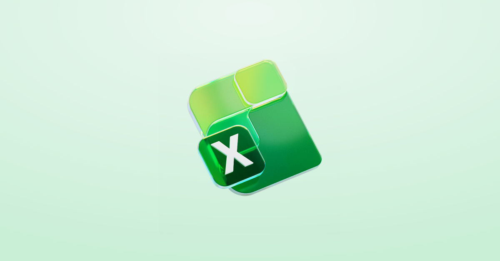
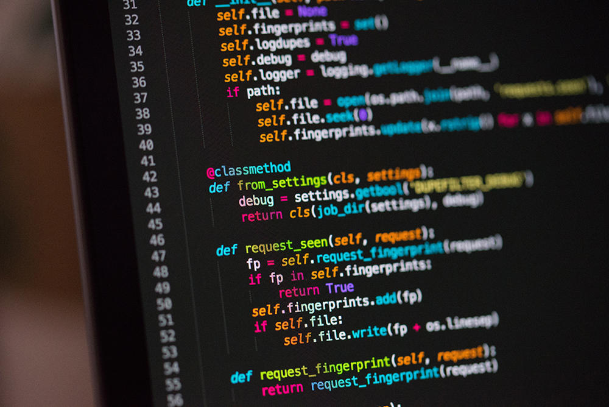

Computergerichte vakken
Applicatie beheer:
Het leren omgaan met alle functies en details van bedrijfssoftware van word, excel en one-drive.


Computersysytemen en netwerk:
Het leren tot in detail over hoe computersystemen en netwerken als ook de componenten daarbinnen in elkaar zitten.
Programmeren en databeheer:
Bij het vak programmeren en databeheer leer je toepassingen schrijven om problemen op te lossen en digitale systemen te bouwen en ontwerpen.
de programeertalen dat we gebruiken zijn: C# (5ADB), Javascript (6ADB) en python (Projectweek)

Webdesign:
Het leren designen en geven van functionaliteit van websites. Zowel het maken van de visuele vormgeving als de technische realisatie die er achter zit.